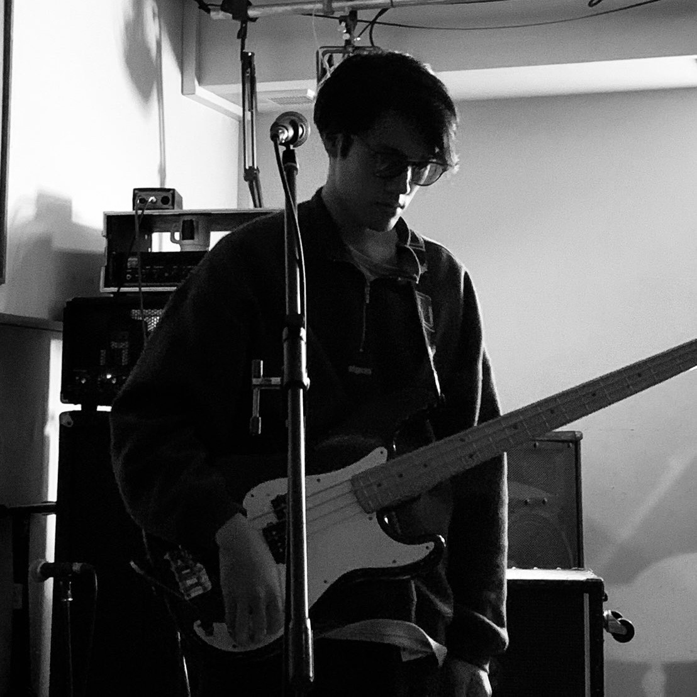
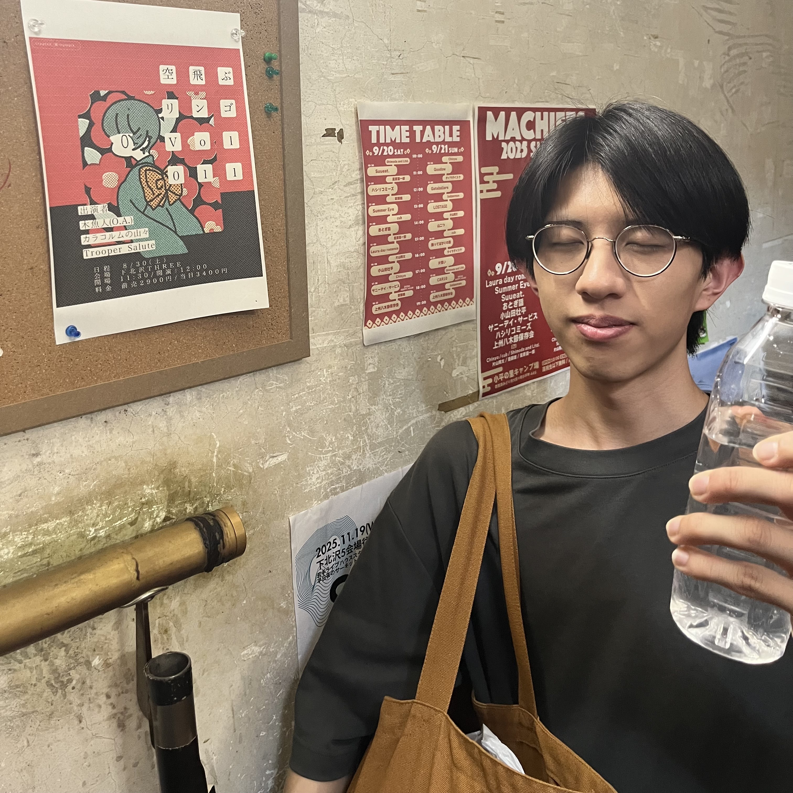
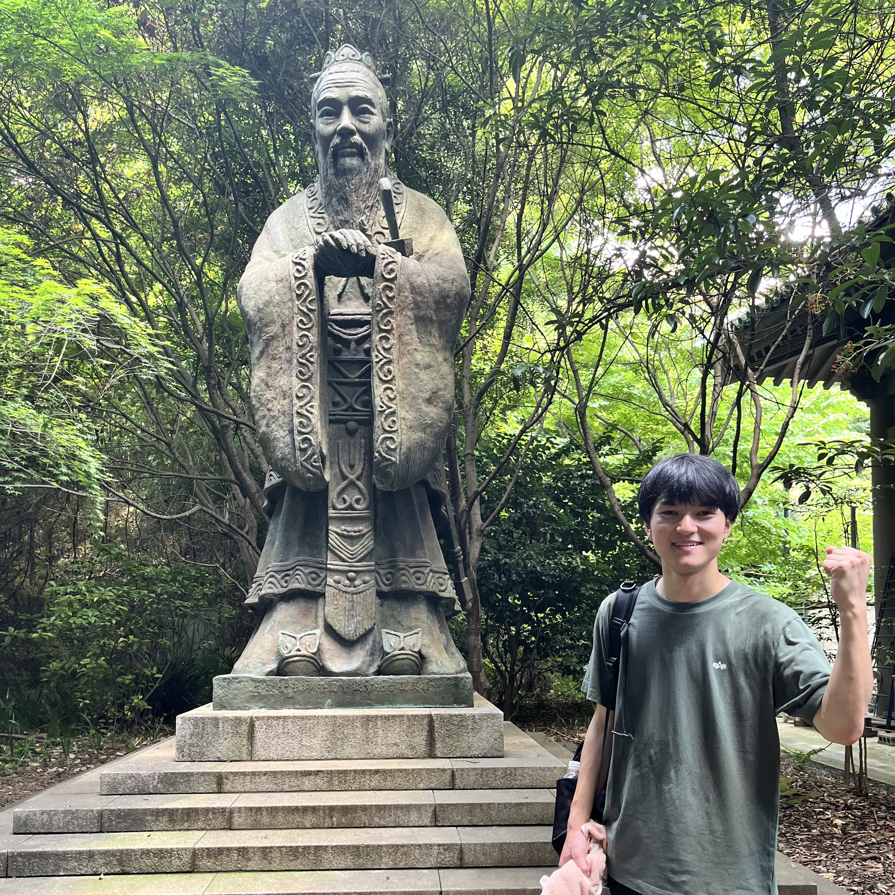
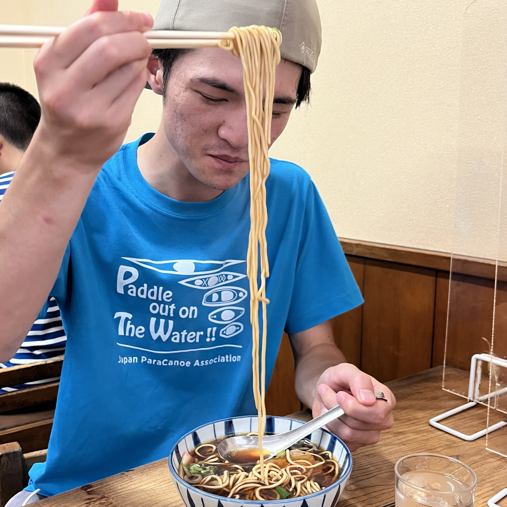

MENU
自己紹介 / About us
自己紹介
名古屋・東山を拠点に活動している、4人編成のバンドです。
名古屋大学の軽音サークル「フォークソング同好会(通称：名フォ)」の部員同士で結成しました。2022年10月結成、2023年7月KDハポンでライブハウスデビュー。以降、名古屋市を中心に各地ライブハウスにて演奏。
1st.EP『東山魚人伝』
昨年2025年5月に1st.EPをリリースしましたので、よければ聴いてください！ボーカル以外一発録りでレコーディングしました。

メンバー紹介
①ルイ
会計、物販管理、レンタカー予約、運転、ベース、コーラス担当。
練習では「リズムの定義付け」で活躍する。「二拍三連なのか、八分の3+3+2なのか」「ジャストなのか、後ろノリなのか」、彼の理系センスに救われた場面は数知れず。拙曲『お寺』のみょんみょんベースへのこだわりは誰にも負けない。幼少期にはTRIX、少年期には米津玄師を聴いて育った。

②セルお
車内BGM、飯屋探し、Instagram、ドラムス、コーラス担当。
嵐、ANORAK!、the
cabsがほとんどである。これらを流すとルイの運転テンションも上がる。練習では「引き出しの多さ」で活躍する。かつて吹奏楽で打楽器を担当していたためか、マスロックのせいか、変拍子に目がない。雑な指示を音楽用語に翻訳してくれることも多い。

③菊地
練習日調整、X、物販企画、作詞作曲、ボーカル、ギター担当。
バンドの立ち上げ人。音楽知識が乏しいために、雑な指示を3人に飛ばし、絞り出させることで編曲している。東京に行ったときは必ず蒙古タンメン中本を食べる。

④原田
スタジオ取り、運転、車内BGM、練習録音、ギター、コーラス担当。
高校から水泳部に入るという異色の経歴。その裏で「ビートルズ」や「ジミヘン」に影響されてギターを弾いていた。独特のリズム感の持ち主で、しばしばルイの槍玉に上げられる。車内BGMは人間椅子、マイケルジャクソンが9割。

よくある質問
①アー写の生き物は何ですか？
(回答)犬です。
2022年に名古屋市博物館で開催された「兵馬俑と古代中国～秦漢文明の遺産～」にて出会った漢代の作品をモチーフにしています。元作品は、中国・陝西省の「宝鶏市陳倉区博物館」が所収しているようです。なお、台湾の「国立故宮博物館」にて類似の犬の目撃情報がありますが、同一ではありません。バンド立ち上げ当初は写真をそのままアー写にしていました。しかし、著作権は無いにしても、何かしらの法に触れるのではと過剰に恐れ、現在はサイケデリックカラーにしたり、イラストにしたりしています。バンド内では敬意を込めて「東山先生」や「犬」と呼ばれています。
②バンド名の由来は何ですか？
(回答)”木魚”＋”魚人”で「木魚人」です。
2022年当時、私、菊地はフィッシュマンズにハマっていました。そんなある日、寺社を散歩しながらフィッシュマンズのことを考えている時に思いつきました。
③どんなジャンルやアーティストの影響を受けていますか？
(回答)「ロック」や「オルタナティブ」が多いと思います。
この1、２年はUKオルタナ(Shame、black midi、Geordie Greep等)、ブラジル音楽(Martinho da Vila、João Gilberto等)、Godspeed You!
Black Emperor、人間椅子などを参考にしています。
その前は、フィッシュマンズ、折坂悠太、神聖かまってちゃん、250(イオゴン)、美輪明宏など。
あとはバンドメンバー全員betcover!!好きなので、曲作りの共通認識としています。
ご覧いただきありがとうございました。木魚人は現在、ライブ出演依頼を待っております！
About us
We are a four-member band based in Nagoya. We formed as members of Nagoya University's light music club, the "Folk Song Club". Formed in October 2022, we made our live house debut at KD japon in July 2023. Since then, we've been performing at various live houses, primarily in Nagoya City.
1st EP: 'Higashiyama-GyojinDen'
We released our 1st EP last May 2025, so please give it a listen if you like! Everything except the vocals was recorded in one take.
Member Introductions
1. Rui (Bass, Backing Vocals)
Handles accounting, merch management, rental car reservations, and driving. Excels at defining
rhythms during practice. His scientific precision has saved the band countless times.
2. Seruo (Drums, Backing Vocals)
In-car BGM, restaurant scouting, and Instagram. Obsessed with odd time signatures. Translates vague
instructions into musical terminology.
3. Kikuchi (Vocals, Guitar)
Practice scheduling, X, merch planning, and songwriting. The band's founder. Arranges songs by
throwing vague instructions at the other members.
4. Harada (Guitar, Backing Vocals)
Studio bookings, driving, and practice recording. Has an unusual background of joining the swim team
in high school. Influenced by The Beatles and Jimi Hendrix.
Frequently Asked Questions
Q: What animal is in the band photo?
A: It's a dog. Based on a Han Dynasty pottery dog encountered at an exhibition. Note: There have
been sightings of a similar dog at the National Palace Museum in Taiwan, but it is not the same one.
When the band first started, we used the actual photo as our official photo. However, even though
there's no copyright, we were overly concerned it might violate some law, so now we use psychedelic
colors or illustrations. Within the band, it's respectfully called "Higashiyama Sensei" or "Dog".
Q: What's the origin of your band name?
A: It's "MokuGyoJin", combining 'Mokugyo' (wooden fish) and 'Gyojin' (fishman). Inspired by
Fishmans.
Q:What genres or artists influence you?
A: I'd say mostly “rock” and “alternative.”In the last year or two, I've been referencing UK
alternative (Shame, black midi, Geordie Greep, etc.), Brazilian music (Martinho da Vila, João
Gilberto, etc.), Godspeed You! Black Emperor, and Ningen Isu.
Before that, it was Fishmans, Yuta Orisaka, Shinsei Kamatte-chan, 250 (Iogon), and Akihiro Miwa.
Also, since all band members love betcover!!, it serves as a shared reference point for songwriting.
Thank you for reading. We are currently awaiting live performance requests! We'd be delighted to hear from you anywhere in the world.
トップページへ戻る / Back to Top